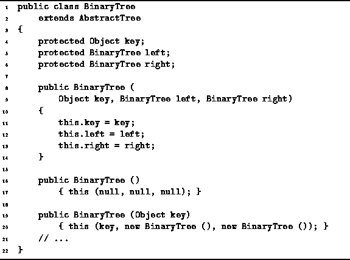

Data Structures and Algorithms
with Object-Oriented Design Patterns in Java
Data Structures and Algorithms
with Object-Oriented Design Patterns in Java
Program  defines constructors for the BinaryTree class.
The first one takes three arguments
and assigns each of them to the corresponding field.
Clearly the running time of this constructor is O(1).
defines constructors for the BinaryTree class.
The first one takes three arguments
and assigns each of them to the corresponding field.
Clearly the running time of this constructor is O(1).

Program: BinaryTree constructors.
The second constructor, the no-arg constructor, creates an empty binary tree. It simply sets all three fields to null.
The third constructor takes as its argument any Object. The purpose of this constructor is to create a binary tree with the specified object as its root. Since every binary tree has exactly two subtrees, this constructor creates two empty subtrees and assigns them to the left and right fields.
 Copyright © 1998 by Bruno R. Preiss, P.Eng. All rights reserved.
Copyright © 1998 by Bruno R. Preiss, P.Eng. All rights reserved.